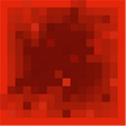

Redstone Circuit Components
Block of Redstone
 |
 |
| Block ID |
152 |
| Stack Size |
64 |
| Blast Resistance |
5 |
Uses:
- Brewing: No use
- Crafting: Can be crafted back into nine redstone dust
- Recipe: Nine redstone dust
- Circuits: Used to provide power to all six sides of the block.